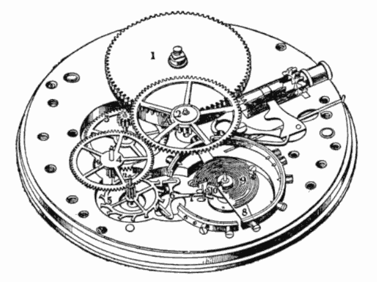

Le schéma bloc définit l'architecture fonctionnelle fondamentale de la montre mécanique à remontage manuel. L'énergie accumulée est transmise, distribuée et régulée de façon continue :
Étape 1 : Énergie
Le Ressort & Le Barillet
Le moteur de la montre. Le ressort-moteur, logé à l'intérieur du tambour (1), emmagasine l'énergie mécanique lors de l'armage.
Étape 2 : Transmission
Le Rouage de Finissage
La démultiplication de la force. Le train d'engrenages (2) achemine l'énergie.
Étape 3 : Distribution
L'Échappement
Le convertisseur cinématique. La roue d'échappement (3) transforme le mouvement rotatif continu en impulsions.
Étape 4 : Régulation
L'Oscillateur
Le cœur isochrone. L'ensemble balancier-spiral (4) dicte le rythme absolu.

1
2
3
4
5
8
9
⚙️
1 Barillet
2 Roue de centre
3 Roue de troisième
4 Roue de seconde
5 Roue d'échappement
8 Balancier
9 Spiral
⚙️ Mécanisme de remontoir
📷 FEUILLET MANUSCRIT ORIGINAL (01-02) — Schéma Bloc & Introduction
2. Organe Moteur (Énergie) : Le Barillet & Systèmes de Remontage
Le barillet est le composant central du stockage d'énergie potentielle du mouvement mécanique. L'ensemble est constitué de quatre éléments fondamentaux :
Le Tambour : Boîte cylindrique abritant le ressort et portant la denture extérieure qui engrène avec le pignon de centre.
Le Ressort-moteur : Lame élastique enroulée à l'intérieur, dont l'extrémité extérieure est fixée à la paroi du tambour.
L'Arbre de barillet : Axe pivotant entre le pont et la platine, muni d'une bonde avec crochet pour l'attache intérieure du ressort.
Le Couvercle : Élément de fermeture qui assure le guidage axial de l'arbre et protège le mécanisme des poussières.
1. Arbre & Pignon
1. Tambour & Roue
1. Ressort-moteur
1. Couvercle
0%
📷 VUE TECHNIQUE 3D — Anatomie du barillet avec labels dynamiques.